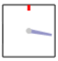

積分は「微分の逆の計算である」という紹介のされかたをすることが多い。確かにそうなのだが、ここでは物理での積分の利用方法に沿った形で積分を導入しよう。
物理における積分という操作の本質は、
ある物理量の変化量から、その物理量が「今」どれだけあるかを考える。
ということにある。微分が「二つの関連した物理量の変化の割合」であったことの“逆”となるわけである。
変化の割合が一定であるような物理量ならば、最初の値（初期値）と単位時間あたりの増加量を知っていれば、現在の値も簡単に計算できる。たとえば、
「水がたまっていなかった水槽に、１秒あたりvリットルの水を流し込んだら、t秒後には何リットルの水がたまっているか？」
という問題の答は、たまっている水の量をV(t)とすると
$$V(t)=vt$$
と表せる。その計算を図で表現したのが次のアニメーションである（実際問題のところ、この程度のことはグラフで表す必要なんてないのだが、後でやる計算との対比のためである）。
絵の右にあるのが浴槽で、上にある蛇口から水が注ぎ込まれている。右の方にあるレバーをひねることで水が出ると思って欲しい（レバーは赤い印のところで水が止まり、時計回りに回すことで出る水の量が増えていく）。
グラフの横軸は時間であり、縦軸は$v$すなわち「1秒あたりに流し込んでいる水の量」である。（１秒あたりに流し込んでいる量）×（秒数）で「流れ込んできた水の量」が計算できるが、それはちょうどグラフの水色の長方形の面積になっている。
つまり、溜まっている水の量が、グラフの面積（水色に塗ったところ）で表現されているのがわかるかと思う。
図の下にあるボタンで、$v$（水の流量）を変えることができるので、いろいろ変えながら「単位時間あたり一定の水が流れ込んでいる時の浴槽の状態」を眺めてみてください。飽きてきたらへどうぞ。